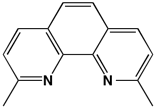

The dmp ligand dmp = 2,9 - dimethyl-1,10-phenanthroline |
With Ni(II): Ni(dmp)I2 Note: some Hydrogens were not located in the x-ray crystal structure determination and have been added computationally and are shown in pink Give a name for the coordination geometry about the Ni(II) metal center Reference: CCDC Code DMPLNI R. J. Butcher, C. J. O'Connor, E. Sinn, Inorg. Chem., Vol 18, p. 492, 1979 |
With Pt(II) Pt(dmp)I2 Give a name for the coordination geometry about the Pt(II) metal center Reference: CCDC Code ZEWXUU R. J. H. Clark, F. P. Fanizzi, G. Natile, C. Pacifico, C. G. van Rooyen, D. A. Tocher, Inorg. Chim. Acta, Vol 235, p 205, 1995 |
Resources developed by Marion E. Cass, Carleton College 2015, modified in 2025; Questions for students in red font